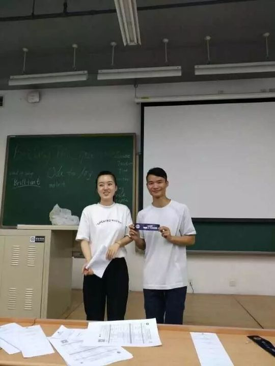
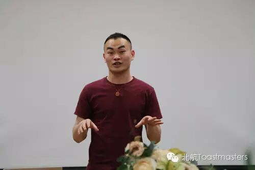
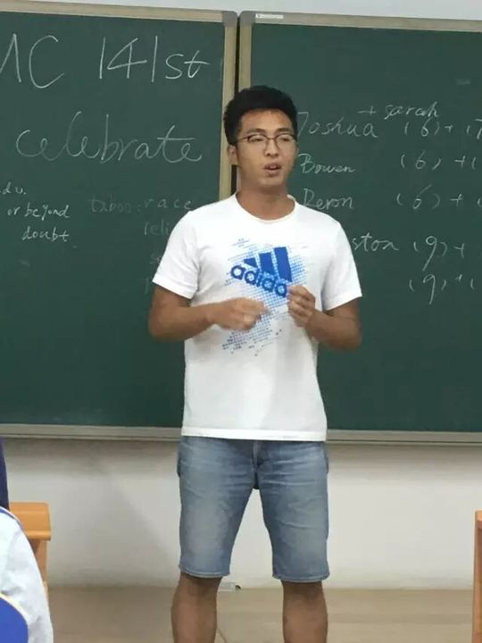
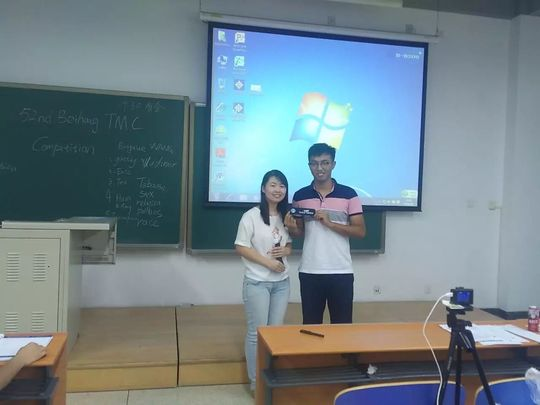

Amy
从破冰新人一路成长为主席的"段子手二姐"，把欢乐和担当一起留给了北航头马。
会员活跃 2016–2017出现 25 次 · 25 篇4 场演讲
Amy，中文名Amy，本科就读于南航，到北航读研后加入了北航Toastmasters。2016年3月，她作为新会员第一次站上舞台，用一篇"Here is Amy, that's me!"完成了破冰演讲（CC1）。此后的一年多里，她几乎从未缺席：CC2《Fill your belly》、CC3《Cease to Be Free and You Cease to Live》、CC4《Comic life》一路走来，演讲题材从生活小事到对自由的思考，逐渐成熟。
在会员们眼里，她是人见人爱的"二姐"——美丽、逗比、反应快，是公认的"段子手"。无论是即兴演讲的双人对话（double）环节大家喊着"need a girl"时她总是"英勇献身"，还是会议主持时换了新发型"镇场"，她都把轻松和笑声带给全场。2016年秋季比赛中，她一举夺得小区中文幽默演讲比赛第一名，也在俱乐部内多次拿下"最佳备稿演讲者"。
Amy的成长不止于演讲。她先后担任副主席与主席，常年挑起Table Topics Master、Toastmaster主持、语法官等角色，是俱乐部运转中默默出力的中坚。作为主席，她在比赛背后做了大量"拉皮条"式的组织联络工作，带领俱乐部在2016秋季比赛中创下五人晋级的历史纪录。
2017年6月，研究生临近毕业，她在第178次会议上以"昨天、今天、明天"做了主席卸任报告，把祝福郑重交到下一届官员手中。回望来路，她曾坦言后悔没有早点去接触社会——但站在头马舞台上的她，早已不再是那个青涩的新人。
里程碑
- 2016-03-18 加入并完成破冰 ↗作为新会员第一次登台，发表CC1破冰演讲'Here is Amy, that's me!'。
- 2016-09 夺得小区中文幽默比赛第一名 ↗2016秋季比赛中获小区中文幽默演讲第一名，被誉为'美丽又逗比的段子手二姐'。
- 2016-09-09 首获最佳备稿演讲者 ↗在第152次会议以CC3演讲拿下Best Prepared Speech。
- 2017-01-06 当选主席登台开场 ↗新任主席Amy在元旦趴上开场，'新官上任誓要顶整片天'。
- 2017-06-24 卸任告别 ↗在第178次会议以'昨天、今天、明天'做主席卸任报告，完成官员换届并送上祝福。
闯关之路 · Competent Communication
✓
CC1
破冰
✓
CC2
组织你的演讲
✓
CC3
明确目标
✓
CC4
怎么说
CC5
肢体在说话
CC6
声音的变化
CC7
研究你的主题
CC8
善用视觉辅助
CC9
以理服人
CC10
激励听众
做过的演讲 · 4 场
破冰演讲，作为新会员介绍自己。她说自己物理很好，但觉得书本知识难解决实际问题，实验做不好也不放弃，相信永不言弃，想去看看更大的世界。
围绕'我是谁、从哪来、到哪去、吃什么'四个问题，分享她对'填饱肚子'与生活品味的理解。
借诗句表达对自由的高度推崇，分享自己关于自由与渴望的故事。同场拿下最佳备稿演讲者。
没人能精准预测明天，而她把自己的人生总结成一部漫画，讲述漫画式生活与她的深层交织。
担任过的职务 · 俱乐部官员
会长 President2017春 · 2017.01–2017.06
担任过的会议角色
Table Topics Master 即兴主持×4Toastmaster 主持×2语法官 Grammarian即兴演讲者 / double 搭档×8Mentor 导师
为俱乐部做的事
- 先后担任副主席与主席，全面负责俱乐部运营与官员换届交接
- 作为主席在背后做大量组织联络工作，带领俱乐部2016秋季比赛创下五人晋级的历史纪录
- 长期承担Table Topics Master、Toastmaster主持、语法官等角色，保障每周会议顺利进行
- 代表俱乐部出战比赛并夺得小区中文幽默演讲第一名，为俱乐部争得荣誉
- 担任新会员Crystal的mentor，帮助新人快速成长
- 以幽默活跃的风格带动现场气氛，成为俱乐部的'气氛担当'
照片墙 · 时间线
共 30 帧，其中 18 帧已用人脸识别确认是本人（带 ✓）。
 ✓
✓ ✓
✓ ✓
✓ ✓
✓ ✓
✓ ✓
✓ ✓
✓ ✓
✓ ✓
✓ ✓
✓ ✓
✓ ✓
✓ ✓
✓ ✓
✓ ✓
✓ ✓
✓
✓ ✓
✓










完整足迹 · 25 次出现（点开，每条可跳转原文）
- 2016-03-03第126次 · 即兴演讲谈父母关爱让自己想家
- 2016-03-17第128次 · 新会员做CC1破冰演讲自我介绍
- 2016-03-23第128次 · 做CC1备稿演讲，谈物理与永不言弃
- 2016-04-13第132次 · 担任132次会议Grammarian语法官
- 2016-04-14第133次 · 做CC2备稿演讲《Fill your belly》
- 2016-05-17第137次 · 与Francis即兴双人演讲
- 2016-05-24第138次 · 与Joshua即兴双人演讲扮演女友
- 2016-05-30第139次 · 与雷森即兴双人演讲
- 2016-06-14第141次 · 与Deron即兴双人演讲，与Wesley组CP得第一
- 2016-07-01第143次 · 担任即兴演讲主持人
- 2016-08-11第148次 · 担任本次会议Toastmaster主持
- 2016-09-05夺得小区中文幽默比赛第一名
- 2016-09-08第152次 · 做CC3演讲分享自由主题的故事
- 2016-09-14第152次 · 获得Best Prepared Speech
- 2016-10-02旅行的意义@minutes of Beihang TMC 154th 中文会议
- 2016-11-03第158次 · Winter@Beihang TMC158th Meeting@19:30 No
- 2016-11-22第159次 · Movies @minutes of 北航 TMC 159rd Meeting
- 2016-11-26第160次 · 朋友 @minutes of 北航 TMC 160th Meeting
- 2017-01-06第164次 · 元旦趴~~@minutes of Beihang TMC164th Meetin
- 2017-03-07第165次 · Spring Festival@minutes of Beihang TMC16
- 2017-04-23Love@BeiHangTMC-171th-Meeting Minutes
- 2017-05-18第174次 · Scope@Beihang TMC174th Meeting@19:30 May
- 2017-06-06第175次 · Ode to Joy@BeiHang TMC 175th Meeting Min
- 2017-06-24第178次 · 毕业@BeiHang TMC 178th Meeting Minutes
- 2017-06-30第179次 · Education@ Beihang TMC #179th Meeting @1
“二姐当副主席的时候就做到了女生也能顶半边天，这回新官上任誓要顶整片天。”